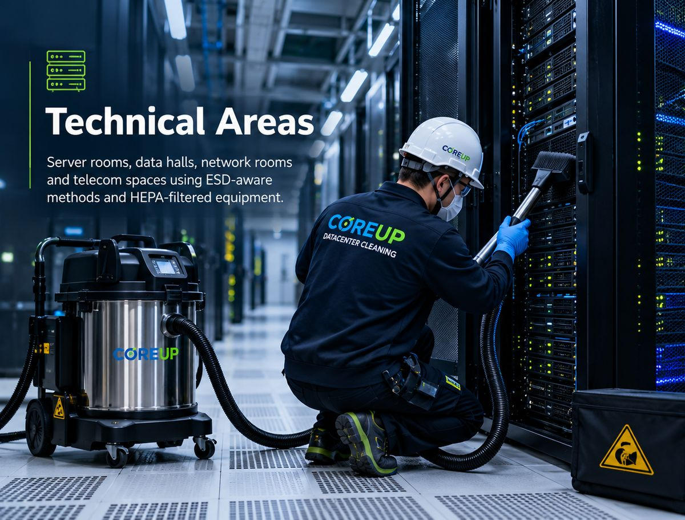
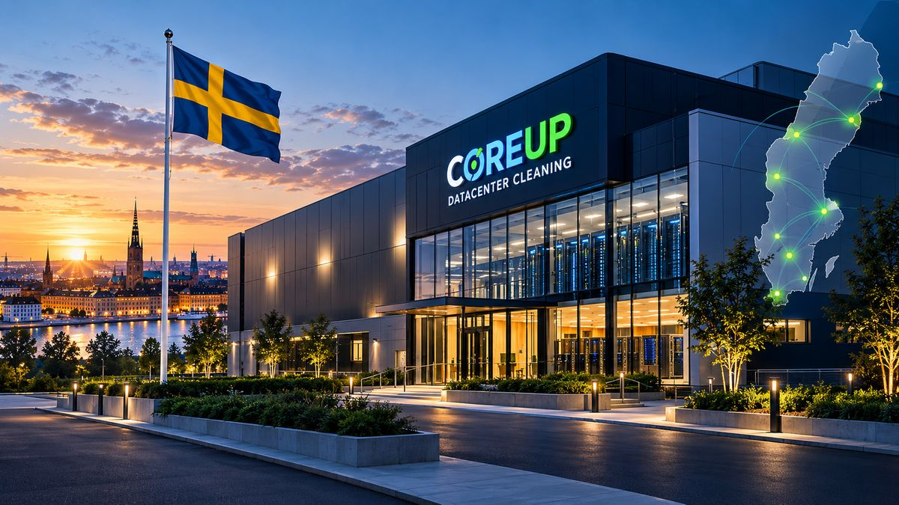
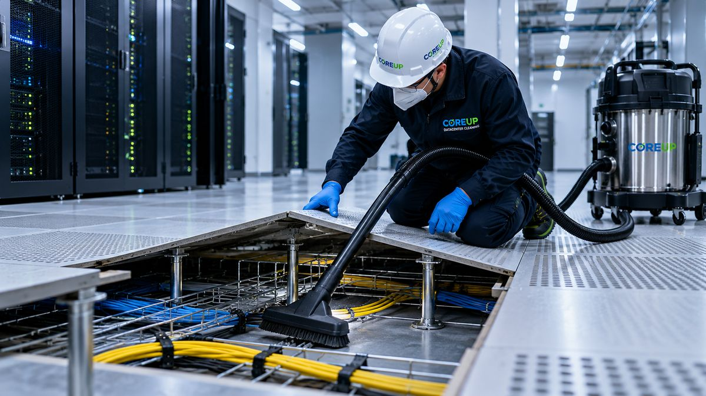
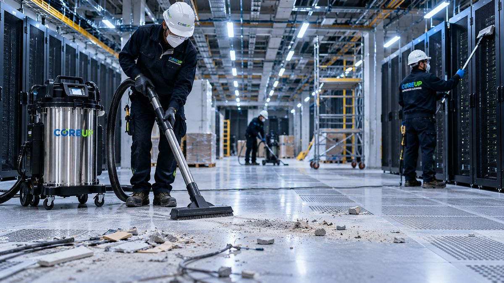
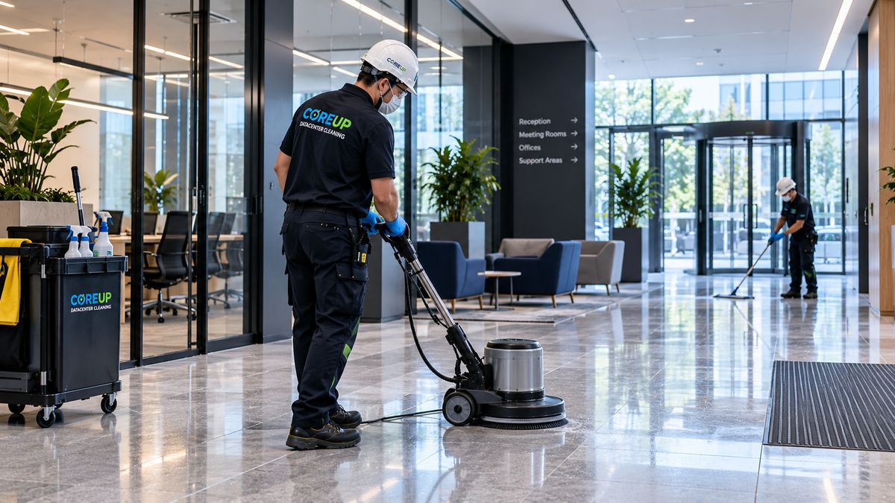
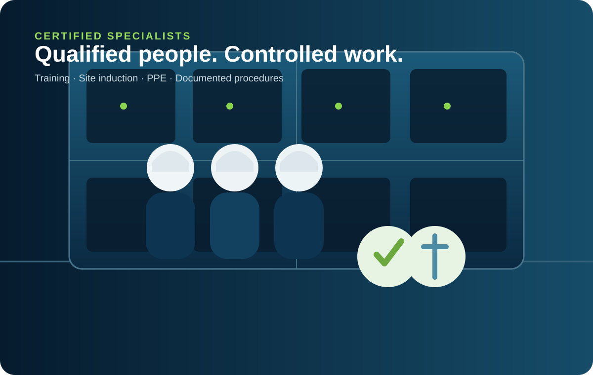

Technical Areas
Server rooms, data halls, network rooms and telecom spaces using ESD-aware methods and HEPA-filtered equipment.
LEARN MOREProfessional, ISO-aligned cleaning services for data centres and mission-critical technical environments across Sweden. Cleaner facilities. Lower risk. Better uptime.
CoreUp is a Swedish specialist cleaning company focused on mission-critical environments. We combine technical know-how, qualified specialists and documented methods to deliver safer facilities with less operational disruption.
READ MORE ABOUT US →
From live technical areas to raised floors, post-construction readiness and general facilities, CoreUp delivers one controlled standard across the site.

Server rooms, data halls, network rooms and telecom spaces using ESD-aware methods and HEPA-filtered equipment.
LEARN MORE
Specialized cleaning beneath raised floors to remove dust and fine particles from critical airflow paths.
LEARN MORE
Remove dust, debris and residue from construction or renovation ahead of commissioning.
LEARN MORE
Office areas, corridors, entrances and support spaces within or adjacent to critical sites.
LEARN MOREOur operating model is built around controlled access, low-particulate execution, specialist equipment and measurable handover.
Our teams are qualified and certified to work inside controlled technical environments. We follow documented procedures, specialist equipment requirements, PPE controls and site-specific inductions.
MEET OUR SPECIALISTS →
ESD-aware methods, HEPA-filtered equipment, documented checklists and clear handover records.
Our methodology is structured around site assessment, planning, controlled execution and documented verification where required.
Evaluate facility layout, airflow, contamination risks and access conditions.
Define scope, equipment, sequence and service window around your operations.
Execute with ESD-aware methods and HEPA-filtered equipment.
Document observations and particle measurements where included in the scope.
Share the site, scope and preferred window. We will help define the right cleaning plan.